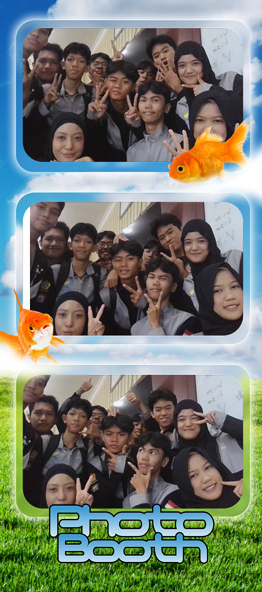
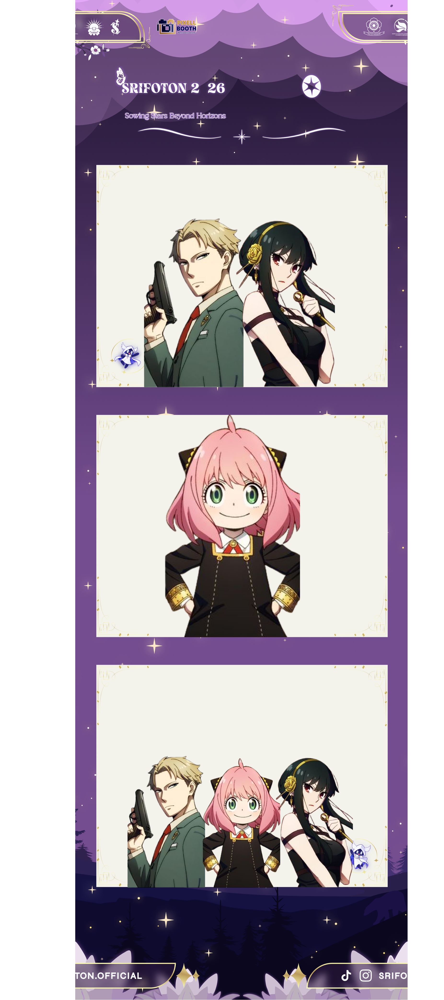
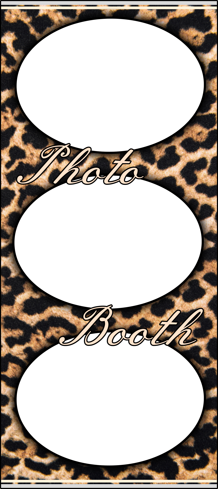

Tentang studio
Coba studio PhotoBooth
Pilih filter dan coba kamera langsung di sini.
Hasil fotomu
Pose 1 / 3
Frame lucu, momen seru
Momen seru ga datang dua kali. Pilih frame, ajak teman atau pasangan, dan abadikan momennya.


Satu frame tepat bikin hasil fotomu makin berkesan, pilih dan masuk ke studio yuk!

Nuansa merah klasik dan emblem varsity.

Motif kotak-kotak cokelat warm bergaya piknik yang cozy dan estetik.

Strip ungu pastel dari SRIFOTON 2026

Gradasi biru langit cerah yang segar serta cheerful.

Pola leopard cokelat berani dengan bingkai oval klasik untuk hasil foto bold dan standout.

Aksen kuning lembut, checker tipis, dan ilustrasi karakter chibi yang manis untuk momen santai.
Tentang studio
Pilih filter dan coba kamera langsung di sini.
CekRek itu website photobooth online yang bikin kamu bisa foto seru langsung dari browser, tanpa perlu antre di booth. Tinggal pilih frame favoritmu, cekrek, dan hasilnya siap diunduh. Cocok buat foto bareng teman, sahabat, atau sekadar gaya sendirian!
Gampang banget! Pilih frame yang kamu suka, klik tombol nyalakan kamera, lalu izinkan akses kamera di browser. Tekan jepret sekali, lalu ganti pose untuk foto kedua dan ketiga. Kalau sudah puas, tinggal unduh hasilnya sebagai gambar PNG. Kalau kurang cocok, kamu bisa foto ulang sepuasnya!
Gratis! Kamu bebas foto sebanyak yang kamu mau tanpa biaya apa pun dan tanpa perlu daftar akun. Jadi tidak perlu khawatir soal kuota jepretan, silakan berkreasi sepuasnya!
Gak perlu sama sekali! CekRek langsung jalan lewat browser di laptop maupun HP, jadi tinggal buka websitenya dan langsung foto. Hemat memori dan praktis! Pastikan saja kameramu aktif dan browsernya mengizinkan akses kamera.